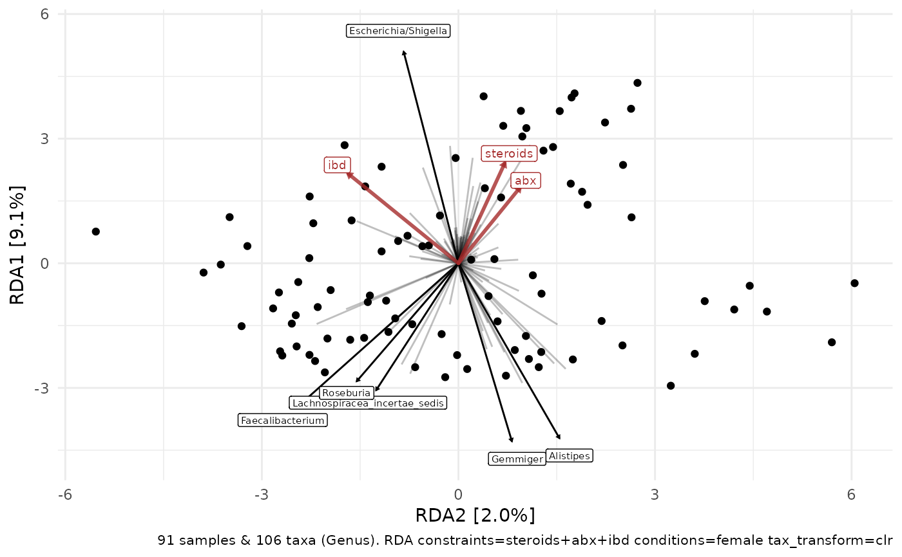

R/ps_sort_ord.R
ordination-sorting-samples.Rdps_sort_ord reorders samples in a phyloseq object based on their relative
position on 1 or 2 ordination axes.
ord_order_samples gets the sample_names in order from the ordination
contained in a ps_extra list. This is used internally by ps_sort_ord
If 2 axes given, the samples are sorted by anticlockwise rotation around the selected ordination axes, starting on first axis given, upper right quadrant. (This is used by ord_plot_iris.)
If 1 axis is given, samples are sorted by increasing value order along this axis. This could be used to arrange samples on a rectangular barplot in order of appearance along a parallel axis of a paired ordination plot.
ps_sort_ord(ps, ord, axes = 1:2, scaling = 2) ord_order_samples(ord, axes = 1:2, scaling = 2)
| ps | phyloseq object to be sorted |
|---|---|
| ord | ps_extra with ordination object |
| axes | which axes to use for sorting? numerical vector of length 1 or 2 |
| scaling | Type 2, or type 1 scaling. For more info, see https://sites.google.com/site/mb3gustame/constrained-analyses/rda. Either "species" or "site" scores are scaled by (proportional) eigenvalues, and the other set of scores is left unscaled (from ?vegan::scores.cca) |
ps_sort_ord returns a phyloseq
ord_order_samples returns a character vector
These functions were created to support ordering of samples on ord_plot_iris
tax_sort_ord for ordering taxa in phyloseq by ordination
# attach other necessary packages library(ggplot2) # example data ibd <- corncob::ibd_phylo %>% tax_filter(min_prevalence = 2) %>% tax_fix() %>% phyloseq_validate() # create numeric variables for constrained ordination ibd <- ibd %>% ps_mutate( ibd = as.numeric(ibd == "ibd"), steroids = as.numeric(steroids == "steroids"), abx = as.numeric(abx == "abx"), female = as.numeric(gender == "female"), # and make a shorter ID variable id = stringr::str_remove_all(sample, "^[0]{1,2}|-[A-Z]+") ) # create an ordination ordi <- ibd %>% tax_transform("clr", rank = "Genus") %>% ord_calc() ord_order_samples(ordi, axes = 1) %>% head(8)#> [1] "048A" "051A" "025A" "199A" "200A" "218A" "119A" "210A"#> [1] "048A" "051A" "025A" "199A" "200A" "218A" "119A" "210A"p1 <- ord_plot(ordi, colour = "grey90", plot_taxa = 1:8, tax_vec_length = 1) + geom_text(aes(label = id), size = 2.5, colour = "red") b1 <- ibd %>% ps_sort_ord(ord = ordi, axes = 1) %>% comp_barplot( tax_level = "Genus", n_taxa = 12, label = "id", order_taxa = ord_order_taxa(ordi, axes = 1), sample_order = "default", ) + theme(axis.text.x = element_text(angle = 90, hjust = 1)) patchwork::wrap_plots(p1, b1, ncol = 1)# constrained ordination example (and match vertical axis) # cordi <- ibd %>% tax_transform("clr", rank = "Genus") %>% ord_calc( constraints = c("steroids", "abx", "ibd"), conditions = "female", scale_cc = FALSE ) cordi %>% ord_plot(plot_taxa = 1:6, axes = 2:1)